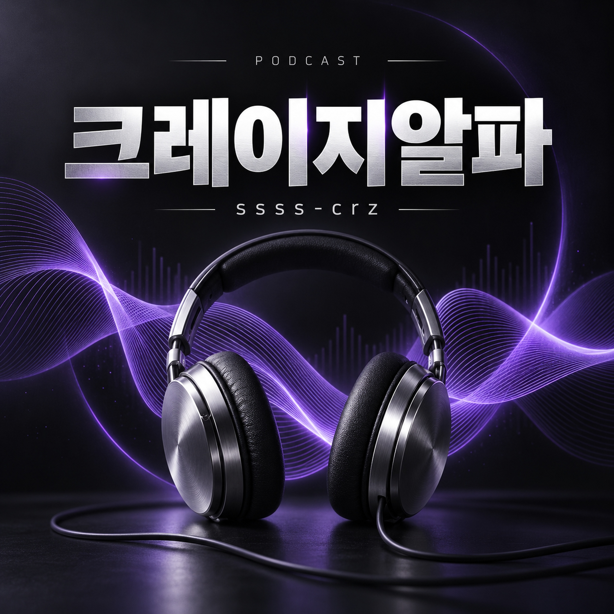

EPISODE 001 · MUSIC
1화 · 크레이지알파 — 야구 BGM
크레이지알파의 첫 음악 에피소드입니다. 약 33초 길이의 야구 BGM을 들을 수 있습니다. 이 회차는 음악 음원이며 경기 중계나 바카라 해설을 포함하지 않습니다. ssss-crz와 바카라사이트 관련 정보를 읽는 기준은 방송 홈페이지의 별도 읽을거리에서 확인할 수 있습니다.
공개일: 2026년 10월 6일 · 재생 시간: 약 33초

음악으로 잠깐 쉬어가고,
정보는 원문과 조건을 살펴보며 읽습니다.
크레이지알파는 ssss-crz 이름으로 선보이는 음악 팟캐스트입니다. 짧은 BGM 에피소드를 들을 수 있으며, 방송 홈페이지에서는 바카라사이트 관련 소개 문구와 이용 조건을 읽는 방법을 별도의 글로 정리합니다. 정보의 작성 날짜, 원문 출처, 조건의 적용 범위를 확인하는 데 초점을 맞춥니다. 음악과 읽을거리는 별도 콘텐츠로 제공하며 특정 서비스의 신뢰성이나 수익을 보증하지 않습니다.
이 페이지에서 크레이지알파는 방송 이름, ssss-crz는 이름을 구분하는 표기로 사용합니다. ‘바카라사이트’는 읽을거리의 주제입니다. 검색 결과의 제목만으로 서비스의 운영 주체나 현재 상태를 단정하지 않도록, 확인할 항목을 본문에 나누어 정리했습니다.
크레이지알파의 첫 음악 에피소드입니다. 약 33초 길이의 야구 BGM을 들을 수 있습니다. 이 회차는 음악 음원이며 경기 중계나 바카라 해설을 포함하지 않습니다. ssss-crz와 바카라사이트 관련 정보를 읽는 기준은 방송 홈페이지의 별도 읽을거리에서 확인할 수 있습니다.
공개일: 2026년 10월 6일 · 재생 시간: 약 33초
소개 페이지에는 서비스 설명, 광고 문구, 사용자 경험담이 함께 나타날 수 있습니다. 이 셋은 같은 근거가 아닙니다. 설명은 제공자가 밝힌 내용을, 광고는 강조하려는 장점을, 경험담은 특정 시점의 개인 사례를 보여줍니다. 먼저 문장의 작성 주체를 구분한 뒤 근거 자료가 연결돼 있는지 확인하는 순서가 좋습니다.
크레이지알파의 읽을거리는 특정 사이트의 이용 결과를 평가한 후기가 아닙니다. 실제로 확인하지 않은 가입 과정, 처리 시간, 혜택 수치를 경험한 것처럼 적지 않습니다. ssss-crz라는 이름과 함께 발견한 자료도 같은 기준으로 읽고, 확인되지 않은 부분은 확인되지 않은 상태로 남겨두는 것이 이 안내의 원칙입니다.
이름이 같거나 비슷하더라도 같은 운영 주체라는 뜻은 아닙니다. 페이지에 표시된 이름, 브라우저 주소창의 실제 주소, 운영자 안내의 세 항목을 각각 살펴보세요. 다른 주소로 이동한다면 이동 전후 주소를 함께 기록해 두면 나중에 자료를 비교하기 쉽습니다. 화면에 적힌 주소와 링크가 연결하는 주소가 다른지도 확인할 항목입니다.
짧은 소개 문구에는 세부 조건이 모두 담기기 어렵습니다. 기간, 대상, 제외 항목, 취소 기준, 별도 비용처럼 결과에 영향을 주는 조건은 원문에서 찾아야 합니다. ‘제한 없음’이나 ‘즉시’ 같은 표현을 보더라도 어느 절차와 범위에 대한 설명인지 분리해서 읽으세요. 설명과 약관이 다르게 보이면 유리한 쪽을 임의로 선택하기보다 차이를 확인해야 합니다.
| 항목 | 기록할 내용 |
|---|---|
| 작성 시점 | 게시일, 수정일, 직접 확인한 날짜를 구분합니다. |
| 원문 위치 | 문구가 있는 페이지 주소와 해당 항목의 제목을 남깁니다. |
| 적용 범위 | 대상, 기간, 제외 조건과 별도 절차를 정리합니다. |
| 확인 상태 | 원문으로 확인한 내용과 아직 답을 얻지 못한 내용을 나눕니다. |
하나의 긍정적 후기나 부정적 후기만으로 전체 운영 상태를 판단하기는 어렵습니다. 후기에서 구체적인 날짜와 상황이 드러나는지, 주장과 연결되는 자료가 있는지 살펴보세요. 화면 일부만 잘린 이미지나 출처 없는 재인용은 앞뒤 맥락을 확인하기 어렵습니다. 게시자와 서비스 사이의 광고·제휴 관계가 공개돼 있는지도 함께 읽을 부분입니다.
이 페이지는 승리 방법이나 수익을 약속하지 않습니다. 과거 결과를 나열한 자료와 미래 결과를 보장한다는 주장은 분리해서 읽어야 합니다. 숫자가 제시되었다면 무엇을 세었는지, 어느 기간의 자료인지, 제외된 사례는 없는지부터 확인하세요. 근거가 없는 확정적 표현은 그대로 재인용하지 않는 것이 좋습니다.
현재 첫 회차는 야구 BGM 음악만 제공합니다. 위 가이드는 홈페이지의 글이며 음성 해설로 녹음된 내용이 아닙니다.
아닙니다. 이 페이지에는 서비스 실사나 인증 결과가 포함돼 있지 않습니다. 명칭과 주제에 관한 안내이며 안전성, 지급, 손실 보상을 보증하지 않습니다.
방송 제목, 표지, 에피소드 설명과 MP3 주소를 확인할 수 있습니다. 새 회차를 추가할 때에는 같은 피드 안에 별도의 에피소드로 안내합니다.